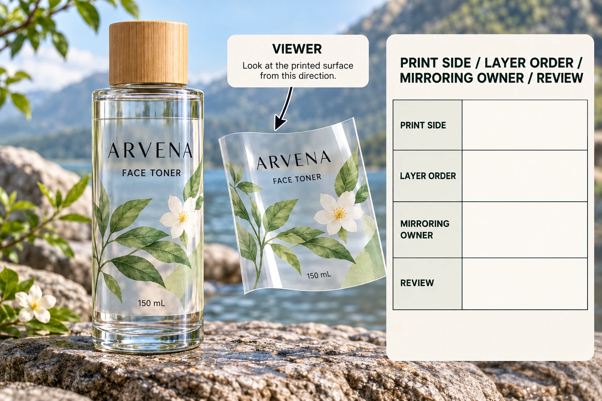

Define where the label will be viewed
Start with the intended finished pack. Mark where the viewer stands and which surface is attached to the container. Ask whether the proposed image is viewed through the film, directly from its printed surface or through another specifically identified arrangement.
Do not use inside label as a substitute for that drawing. It can be interpreted as a print side, a position on the container or an entirely different product-contact arrangement. This guide does not propose applying labels inside a cosmetic container or establish suitability for product contact.
The clear-label guide addresses transparency and contrast on the pack. Here the narrower decision is how the actual viewing path and print-side instruction are communicated to production.
Draw the proposed layers without guessing
Have the converter identify the relevant film, print, white backing if proposed, adhesive and container relationship. Record the actual order and side names it uses. Different proposed constructions can require different stacks, so a generic diagram should not become the manufacturing specification.
If white ink is included, identify which artwork areas it supports and where it sits in that acknowledged proposal. A screen's white background does not establish a production white layer. Keep the layer instruction attached to the exact artwork rather than in an unlinked message.
Ask what protects or exposes the relevant printed surface in the supplied arrangement. Do not claim that all reverse-printed labels are automatically protected, waterproof or suitable for a particular chemical contact. Those properties require evidence for the complete construction and actual use.
Assign mirroring to one responsible party
Provide an unmistakable normal-readable reference showing how the finished label must appear. Ask the receiving prepress team what source and export orientation it requires, and who will perform any production transformation. Record the answer before supplying a mirrored replacement.
If both designer and printer mirror the same artwork independently, the intended transformation can be lost. The practical control is one acknowledged file workflow and a final view representing the intended finished appearance. This is a coordination risk to prevent, not a claim that such an error occurred in a real customer order.
The overprint review guide handles another output question. Correct overprint behavior cannot establish that the viewing direction is right, and a readable reference cannot establish every separation's output behavior.
Review the final appearance and construction together
Ask the printer how the proof should identify view side, orientation and layer intent. Review normal-readable product names, numerals and directional artwork against the intended pack. If the proof shows a production-side view, label it clearly and connect it with a finished-view reference.
For physical appearance, obtain the relevant sample on the intended container where practical. Bottle and liquid color can affect contrast, while the complete construction affects what remains visible. A correct digital orientation does not settle those material questions.
Record the sample's scope. An appearance model can explain intended viewing without proving the proposed manufacturing route or performance. Ask what remains unconfirmed before releasing bulk supply.
| Record | Input to agree | Hold point |
|---|---|---|
| Finished view | Viewer and intended readable design | Team cannot identify the same final side |
| Application side | Adhesive/container relationship | Ambiguous inside/outside instruction |
| Layer order | Converter-confirmed stack and references | Generic diagram treated as specification |
| White intent | Relevant supported objects and location | Screen white mistaken for ink instruction |
| File workflow | Source orientation and mirroring owner | Two parties may transform independently |
| Proof | Identified export and clear view labeling | Production view has no finished-view reference |
| Sample | Relevant container and construction scope | Digital orientation substitutes for physical acceptance |
| Release | Accepted version and unresolved questions | File, stack and approval refer to different proposals |
Start with the final readable view. Obtain the proposed construction and file instructions, review the exact export and relevant sample, then record which party accepted each element. Hold release when the intended viewing side or transformation ownership remains ambiguous.

Choose the arrangement for a reason
A hypothetical project may have a supported reverse-print proposal that answers a defined construction or appearance requirement. It still needs the documented stack, file workflow and relevant sample acceptance.
Another project may meet its brief with an ordinary supported clear-label arrangement and an appropriate finish. Changing the print side solely because reverse sounds more sophisticated adds a decision without an established benefit. Compare actual supported proposals and evidence rather than terminology.
For custom clear cosmetic labels, provide the bottle and liquid appearance, dimensions, artwork, quantity and a marked finished viewing direction. Ask which constructions are available and what orientation the production file requires. Use the contact form to draft a message, then send the layer sketch and artwork by email or WhatsApp. Agree the readable finished view before transforming the file.